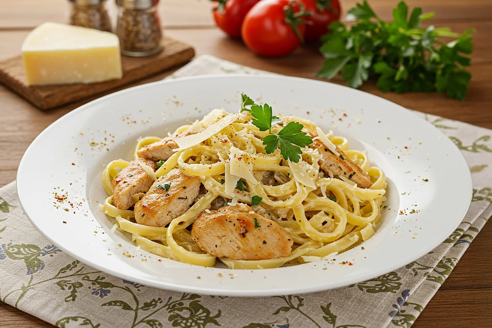

My Favorite Recipes
Pasta Bolognese

This is a traditional Italian pasta dish with meat sauce. It is very popular and tasty.
Ingredients
- Ground beef
- Pasta
- Tomatoes
- Onion
- Garlic
- Olive oil
- Salt and pepper
Steps
- Heat oil in a pan
- Add onion and garlic
- Add ground beef and cook
- Add tomatoes and herbs
- Simmer for 20-30 minutes
- Cook pasta in boiling water
- Mix pasta with sauce
- Serve hot
Grilled Steak

A delicious grilled steak. It is a good meal for dinner. You need a good grill to cook it.
Ingredients
- Steak (ribeye)
- Butter
- Garlic
- Rosemary
- Salt and pepper
- Olive oil
Steps
- Take steak out of the fridge
- Dry it with paper
- Add salt and pepper
- Heat the grill
- Put steak on grill
- Cook 3-4 minutes on each side
- Add butter and garlic
- Let it rest for a few minutes
Caesar Salad

Caesar salad is a simple and fresh dish. It has lettuce, cheese and dressing. It is healthy and good.
Ingredients
- Romaine lettuce
- Parmesan cheese
- Croutons
- Garlic
- Lemon juice
- Mayonnaise
- Salt and pepper
Steps
- Wash the lettuce
- Dry and cut it
- Make the dressing with garlic, lemon juice and mayo
- Add salt and pepper to the dressing
- Put lettuce in a bowl
- Pour dressing on lettuce
- Mix everything
- Add croutons and cheese on top
- Serve